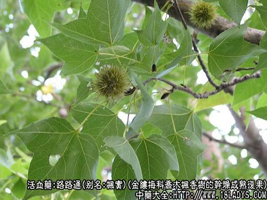
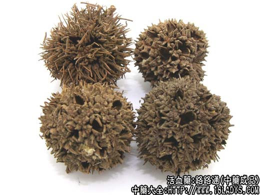
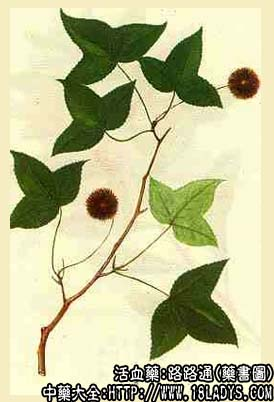

本品为少常用中药。始载《本草纲目拾遗》的枫果项下。
别名：枫实、枫球子、九孔子、六六通。
来源：为金缕梅科植物落叶乔木枫香树的干燥成熟复果。野生或栽培。
产地：主产于浙江、江苏、安徽、湖北等地，华北地区亦有产。
性状鉴别：复果圆球形系由25～40个小蒴果组成，直径2～3厘米。表面灰棕色或暗棕色，上有多数芒刺，系由宿存花柱及子房周围的苞片变成，长约5～8毫米，多弯曲或折断，有多数蒴果成熟后顶端开裂的孔洞，状如蜂窝。体轻、质硬，不易破开。断面不平台，有放射状的隆起及凹陷。气微，味淡。
以个大，无泥土者为佳。
功效与作用：除湿热、祛风止痛、利水通经。临床观察认为该药可能有抗过敏作用，故荨麻疹、过敏性鼻炎等患者常用之。
炮制：生用。
性味：苦、微涩、平。
归经：入肝经。
功能：通经、利水、除湿热痹痛。
主治：月经不调、周身痹痛、小便不利。现多以煎水饮，治耳聋。
临床应用：主要治疗与过敏有关的疾患，以及跌打损伤。
1、治荨麻疹、风疹，配四物汤、蝉蜕、白鲜皮等，方如四物消风饮加减，此方有祛风、止痒、散疹的作用。
2、治过敏性鼻炎，以路路通配苍耳子、辛夷、白芷、防风等，组成一张具有抗过敏、祛风、消炎、通窃作用的方剂，即过敏性鼻炎汤，对减少鼻腔分泌物有一定作用。
3、治风湿和类风湿性关节炎，配独活、羌活、豆豉姜、鸡血藤、石楠藤、当归等，此时剂量宜稍大，可至9～15g。
4、治跌打损伤，内服外洗均可，能散瘀止痛。常配赤芍、丹参、泽兰、苏木等活血药，水煎服。外洗可用关节热洗方。
此外，治血管神经性水肿，可在五皮饮内加入路路通；治妇女经闭属热证者，可在小柴胡汤内加入路路通、益母草、当归等，效果也较好。
用量：3～9g，稍大用量9～15g。副作用偶有心悸。